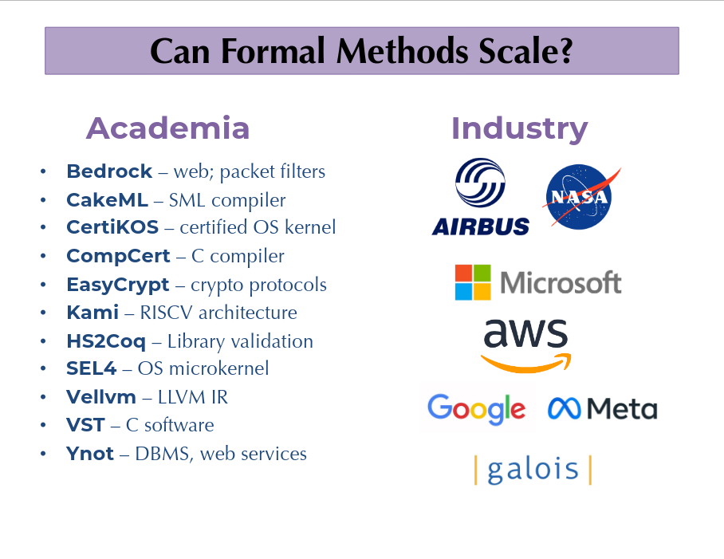

Basics.v
Table of Contents
- 1. Summary
- 2. Some basic syntax
- 3. Proof by simplification
- 4. Proof by rewriting
- 5. Proof by case analysis
- 6. Optional: More on Notation
- 7. Optional: Fixpoints and Structural Recursion
- 8. Exercises
- 9. Exercises (Warmups)
- 10. Exercises (“Course Late Policies, formalized”)
- 11. Exercises (“Binary Numerals”)
- 12. Testing Your Solutions
- 13. Scores
- 14. Questions
- 14.1. Not a (co-)inductive type? (Propositions are not booleans)
- 14.2. There’s a difference? (Tuple pattern vs multiple patterns in case analysis)
- 14.3. What’s the difference between
rewrite ->andrewrite <-? - 14.4. How do I use the Coq IDE?
- 14.5. Decreasing arguments
- 14.6. TODO What is a notation scope?
- 14.7. TODO How do tactics work under the hood?
- 14.8. TODO How do I change how ProofGeneral looks?
- 14.9. TODO
bin_to_nat: Helpers needed?
- 15. Metacognition
- 16. Further knowledge
- 17. TODOs
- 18. Next up
1. Summary
The chapter introduces Coq’s native functional language called Gallina. We also go through proof by simplication, rewriting, and case analysis, and the tactics needed for such proofs. We define natural numbers, booleans; some simple functions on natural numbers and booleans; and prove properties about the functions. We explore Coq’s type system.
1.1. Terms
Coq, interactive theorem prover, functional programming, Gallina, type, expression, Compute command, type definition syntax, type constructors, enumerated types, function definition syntax, infix notation, pattern matching, booleans, conditionals, parametrized types, tuple types, examples (proof), proof syntax, reflexivity tactic, simpl tactic, assertion syntax, modules, module syntax, natural numbers, nat type, expression evaluation syntax, arrow types, same type parameters idiom, recursive function definition syntax, infix notation options, algebraic data types, propositions, proof by simplification, universal quantifier, proof goals, intro tactic, assumptions, proof context, proposition keywords: {theorem, lemma, fact, example, remark}, proof by rewriting, tactics, rewrite tactic, admitted command, check command, abort command, proof by case analysis, destruct tactic, rewrite with theorem, eqn annotation, intro pattern, bullets, subgoals, notation scope, precedence, associativity, fixpoints, structural recursion, termination requirement, multiple cases sugaring, nested case sugaring, unfolding
2. Some basic syntax
Functional programming has code that have no side effects. There is a better connection from programs to mathematical objects.
Functions are first-class values. They can be passed as arguments to other functions.
Other features include algebraic data types (sum, product types), pattern matching, polymorphic type systems.
Coq’s native functional language is called Gallina.
Coq’s built-in features are small. Because we can build almost all the definitions we need. What follows is some small snippets of interest. Refer to the book for more complete snippets.
Defining a type.
Inductive NAME : Type := | ... .
In this chapter, they first work with enumerated types. We will see tuple types, parametrized types, and so on as well.
Defining a function.
Definition name arg1 arg2 ... := ... .
Match.
match X with | PATTERN -> RESULT ... end.
There is a command “Compute” that evaluates expressions.
Compute EXP.
Examples, or “unit tests”. And our first proof, and usage of tactics.
Example test_orb1 (orb true false) = true. Proof. simpl. reflexivity. Qed.
We are trying to prove an example that applying orb (logical or) to true and false gives us true. We start a proof and use the tactics simplification and reflexivity to prove it. And then we end, so Qed. There will be discussion of proofs shortly.
Infix notation.
Notation "x && y" := (andb x y) = true.
Booleans. Conditionals are like in SML:
if p then x else y
An interesting thing is that the guard in the conditional will work with any two-valued type. As in, two-valued types are treated the same as booleans in the sense that the first constructor is treated as True and the other constructor as False. This is useful if we want to make datatypes like “blackOrWhite” which is either “black” or “white”.
We can create Modules, we can use them for namespaces.
Types are defined with the keyword Inductive.
Types can be parametrized - a type constructor can take another element of some type.
A type with a single type constructor with multiple parameters can be used to define a tuple type. E.g.
Inductive nybble : Type := | bits (b0 b1 b2 b3 : bit).
So far, the chapter has shown enumerated types, parametrized types, and tuple types. Enumerated types have a finite set of elements. If we want to create an type with an infinite set, like the natural numbers, the type constructor must take itself as a parameter - an inductive definition.
The chapter differentiates type constructors and functions - both of them “take” something as input - however, functions are defined by computation rules, but type constructors are simply representations.
Functions are defined with the “Definition” keyword. However, to declare a recursive function, we must use the Fixpoint keyword.
The chapter points out that the simpl tactic has no effect on the proof goals (of the example proofs), only reflexivity does the work. TBD shortly.
There is a notational convenience: if two arguments have the same type, they can be written together. E.g.
Fixpoint mult (n m : nat) : nat := match n with | O => O | S n' => plus m (mult n' m) end.
Coq does really come with not a lot built in. Natural number comparisons are built in by the user, for example.
Propositions are logical claims. So, 1 =? 0 is an expression that evaluates to a boolean, but 1 = 0 is a logical claim that you can (try) to prove.
Note that Coq code lines ends with periods.
3. Proof by simplification
So far, all of the proofs were the same: use simpl to simplify both sides, and then use reflexivity to check that both contain identical values.
We can use this “proof by simplification” to establish more interesting properties. 0 is a neutral element (or identity element) because 0 + n reduces to n no matter what n is.
We have our first theorem:
Theorem plus_O_n : forall n : nat, 0 + n = n.
We also used an universal quantifier.
The chapter notes that the reflexivity tactic is powerful - in the proofs so far, the simpl tactic were actually not required, because reflexivity does some simplification by itself. And, reflexivity actually does more simplification than simpl does! It tries unfolding defined terms, replacing them with their right hand sides. simpl is used when we want an intermediate state, where we need to read and understand the new goal it creates, so that it isn’t expanding definitions eagerly like with reflexivity and leave the goal “messy”.
The keywords Example, Theorem, Fact, Lemma, Remark mean “pretty much the same thing” in Coq. It is a matter of style.
Here’s the proof for our theorem.
Theorem plus_O_n : forall n : nat, 0 + n = n. Proof. intros n. simpl. reflexivity. Qed.
intros n is basically like saying “Suppose n is a natural number” in a proof - it fixes some n and progresses the proof by dealing with the universal quantifier. intros n moves the quantifier in the goal to a context of current assumptions.
A tactic is a command that guides the process of checking some claim. It’s a move in the proof.
4. Proof by rewriting
We have a new kind of theorem - one that uses an implication - it’s not a universal property of nunbers, it’s a specific one that holds if n=m.
Theorem plus_id_example : forall n m:nat, n = m -> n + n = m + m.
To prove this, we need to assume the hypotheses - we can use the intro tactic to get all the needed variables into context.
Because n and m are arbitrary numbers, we can’t use simplification, which works on expressions (?). We prove this instead by noticing that if we replace n with m in the right hand side, and n = m, then it holds. This is called proof by rewriting. We use the tactic rewrite.
Proof. (* move both quantifiers into the context: *) intros n m. (* move the hypothesis into the context: *) intros H. (* rewrite the goal using the hypothesis: *) rewrite -> H. reflexivity. Qed.
Note that we move the quantified variables into the context, but we also move the hypothesis into the context - we assume it, then continue with the goal. The rewrite tactic uses the hypothesis. rewrite -> means rewriting right to left, which is the default. rewrite <- means rewriting left to right.
We can use the rewrite tactic with a theorem instead of a hypothesis from a context. If the theorem has quantified variables, Coq will try to fill in the appropriate values by matching the theorem with the current goal.
Theorem mult_n_0_m_0 : forall p q : nat, (p * 0) + (q * 0) = 0. Proof. intros p q. rewrite <- mult_n_O. rewrite <- mult_n_O. reflexivity. Qed.
5. Proof by case analysis
Not everything can be proved with simplification and rewriting. Unknown values (those quantified over) can block simplification.
Theorem plus_1_neq_0_firsttry : forall n : nat, (n + 1) =? 0 = false. Proof. intros n. simpl. (* does nothing! *) Abort.
(n + 1) is a term that can’t be simplified, because n is general. So, simpl does nothing.
Instead we have to use case analysis - n is either zero, or a successor of some m.
If n is zero, then 0 + 1 is clearly not equal to 0. If n is S m, it is enough that it is a successor to say that it is not zero.
A case analysis is done in Coq using the destruct tactic. It’s called destruct because it considers each case where a value uses a certain constructor - and gives you sub-goals for them.
Theorem plus_1_neq_0 : forall n : nat, (n + 1) =? 0 = false. Proof. intros n. destruct n as [| n'] eqn:E. - reflexivity. - reflexivity. Qed.
There is an annotation “as [| n']” - this tells Coq what variable names to use in each sub-goal. Zero does not have a parameter, so it is empty. The annotation eqn:E tells destruct to give a name to the current case, i.e, either n = 0
or n = S n'. It’s optional - you can leave this annotation off and Coq will assign variable names automatically, but that is bad style as the auto-assigned names are usually confusing.
There are - signs: they are called bullets, they mark the proofs for the generated subgoals and ensure that a subgoal is complete before trying the next one. It’s good practice to mark cases with bullets. Bullets are optional, if omitted, Coq asssumes you do the subgoals in order.
You can use different kinds of bullets for subproofs: +, *, and any repetition (e.g. --- or ***). Sub-proofs can be enclosed in curly braces.
The destruct tactic can be used with any inductively defined datatype.
I learned a new word: involutive - when an operation is its own inverse.
We may notice that many proofs perform case analysis on a variable right after introducing it, as such:
intros x y. destruct y as [|y] eqn:E.
Here is the shorthand in action. We can simply use the intro pattern after intros instead of using the destruct tactic and then using a intro pattern.
Theorem plus_1_neq_0' : forall n : nat, (n + 1) =? 0 = false. Proof. intros [|n]. - reflexivity. - reflexivity. Qed.
The downside is that we lose the equation recording the assumption in each subgoal, which we got from the eqn:E annotation.
6. Optional: More on Notation
There are some chapters labeled “Optional”. The authors recommend skimming them.
Notation "x + y" := (plus x y) (at level 50, left associativity) : nat_scope. Notation "x * y" := (mult x y) (at level 40, left associativity) : nat_scope.
For a notation symbol, we can specify the precedence level and associativity. Coq uses precedence levels from 0 to 100, and left, right, or no associativity.
Apparently, a notation symbol also has a notation scope (what?).
7. Optional: Fixpoints and Structural Recursion
Fixpoint plus' (n : nat) (m : nat) : nat := match n with | O => m | S n' => S (plus' n' m) end.
Here, Coq notes that the function is decreasing in the first argument. We are performing a structural recursion over the argument n - making sure that we only make recursive calls on strictly smaller values of n. This is a proof of termination. Coq demands that some argument of every Fixpoint is decreasing.
This is a part of Coq’s design - it guarantees that every function will terminate. However, apparently, Coq’s automatic analysis of whether inputs decrease isn’t very sophisticated, and apparently it is sometimes necessary to write functions in slightly unnatural ways. (What?)
8. Exercises
There are 20 exercises in total. The following are the exercises in the main text.
8.1. nandb
Shows how to use simpl and reflexivity.
8.2. andb3
Same as above.
8.3. factorial
Shows how to define a fixpoint function.
8.4. ltb
8.5. plus_id_exercise
Introducing the intros tactic, for variables and hypotheses.
8.6. mult_n_1
Shows to use/invoke theorems in proofs using rewrite.
8.7. andb_true_elim2
Shows how to use destruct for case analysis. This was a bit tricky before I realized how to step one tactic at a time. You destruct two times. When encountering a contradiction, use it to rewrite.
8.8. decreasing (optional)
The problem was to write a recursive function that terminates on all inputs but gets rejected by Coq’s unsophisticated automatic analysis of decreasing arguments.
Answer:
Fixpoint summation (i : nat) (n : nat) : nat := if i =? n then n else i + (summation (i+1) n).
Wow, it’s actually interesting how Coq is unable to analyze this simple function as decreasing! They should borrow Why3’s variant keyword - n - i is strictly decreasing. In Why3, you’d have to include this variant keyword or else Why3 would complain about the function not being proved as terminating.
8.9. zero_nbeq_plus_1
Straightforward.
9. Exercises (Warmups)
These were pretty straightforward uses of rewrites and/or case analysis.
9.1. identity_fn_applied_twice
9.2. negation_fn_applied_twice
9.3. andb_eq_orb
10. Exercises (“Course Late Policies, formalized”)
10.1. Background
Suppose a course has a grading policy based on late days.
A student’s letter grade is lowered if they submit too many HW assignments late.
We have a letter datatype, modeling the grade. We have a modifier type, which modifies a letter grade.
For example, we can have a Natural A, which is a plain grade of A. There’s also Plus A, Minus A.
A grade is then just a letter and a modifier. We also create a enumerated type comparison.
Inductive letter : Type := | A | B | C | D | F. Inductive modifier : Type := | Plus | Natural | Minus. Inductive grade : Type := Grade (l:letter) (m:modifier). Inductive comparison : Type := | Eq (* "equal" *) | Lt (* "less than" *) | Gt. (* "greater than" *)
This is a straightforward comparison function for letter grades. What’s notable though, is the syntactic sugar for two cases at once:
(** As another shorthand, we can also match one of several possibilites by using [|] in the pattern. For example the pattern [C , (A | B)] stands for two cases: [C, A] and [C, B]. *) Definition letter_comparison (l1 l2 : letter) : comparison := match l1, l2 with | A, A => Eq | A, _ => Gt | B, A => Lt | B, B => Eq | B, _ => Gt | C, (A | B) => Lt | C, C => Eq | C, _ => Gt | D, (A | B | C) => Lt | D, D => Eq | D, _ => Gt | F, (A | B | C | D) => Lt | F, F => Eq end.
And we also have a modifier comparison.
Definition modifier_comparison (m1 m2 : modifier) : comparison := match m1, m2 with | Plus, Plus => Eq | Plus, _ => Gt | Natural, Plus => Lt | Natural, Natural => Eq | Natural, _ => Gt | Minus, (Plus | Natural) => Lt | Minus, Minus => Eq end.
We define lower_letter - a function that lowers a letter grade. It’s just simple pattern matching.
Definition lower_letter (l : letter) : letter := match l with | A => B | B => C | C => D | D => F | F => F (* Can't go lower than [F]! *) end.
10.2. letter_comparison_Eq
Destructing a letter gives you five possible options.
10.3. grade_comparison
We define a comparison function for grades. The resulting ordering is called “lexicographic ordering”.
A hint is given - match g1 and g2 simultaneously but don’t “enumerate all the cases” – do case analysis on letter_comparison call.
Interesting things: reflexivity should quickly prove a “unit test” of a function. Nested match expression – the inner one doesn’t end with a dot. It seems periods close a full term.
10.4. lower_letter_lowers
10.5. lower_grade
10.6. lower_grade_lowers
This was the most fun proof so far! There was a lot of strategic destructs, simplifications, and rewrites. We also used previous theorems.
10.7. no_penalty_for_mostly_on_time
This “unfolding” technique is quite important.
(** Sometimes it is useful to be able to "unfold" a definition to be able to make progress on a proof. Soon, we will see how to do this in a much simpler way automatically, but for now, it is easy to prove that a use of any definition like [apply_late_policy] is equal to its right hand side just by using reflexivity. This result is useful because it allows us to use [rewrite] to expose the internals of the definition. *) Theorem apply_late_policy_unfold : forall (late_days : nat) (g : grade), (apply_late_policy late_days g) = (if late_days <? 9 then g else if late_days <? 17 then lower_grade g else if late_days <? 21 then lower_grade (lower_grade g) else lower_grade (lower_grade (lower_grade g))). Proof. intros. reflexivity. Qed.
10.8. graded_lowered_once
Same thing as above.
11. Exercises (“Binary Numerals”)
11.1. binary
We are given this background:
(** **** Exercise: 3 stars, standard (binary) We can generalize our unary representation of natural numbers to the more efficient binary representation by treating a binary number as a sequence of constructors [B0] and [B1] (representing 0s and 1s), terminated by a [Z]. For comparison, in the unary representation, a number is a sequence of [S] constructors terminated by an [O]. For example: decimal binary unary 0 Z O 1 B1 Z S O 2 B0 (B1 Z) S (S O) 3 B1 (B1 Z) S (S (S O)) 4 B0 (B0 (B1 Z)) S (S (S (S O))) 5 B1 (B0 (B1 Z)) S (S (S (S (S O)))) 6 B0 (B1 (B1 Z)) S (S (S (S (S (S O))))) 7 B1 (B1 (B1 Z)) S (S (S (S (S (S (S O)))))) 8 B0 (B0 (B0 (B1 Z))) S (S (S (S (S (S (S (S O))))))) Note that the low-order bit is on the left and the high-order bit is on the right -- the opposite of the way binary numbers are usually written. This choice makes them easier to manipulate. *)
The task was to define an increment function incr and a conversion function bin_to_nat.
For bin_to_nat, I had to define pow and use a helper function bin_to_nat'.
12. Testing Your Solutions
The test file for this chapter is BasicsTest.v. To run it, make sure you have saved Basics.v to disk. Then first run coqc -Q . LF Basics.v and then run coqc -Q . LF BasicsTest.v; or, if you have make installed, you can run make BasicsTest.vo. (Make sure you do this in a directory that also contains a file named _CoqProject containing the single line -Q . LF.)
The output is useful:
- The actual output from the Coq file itself.
- For each exercise, its point value, whether the type is ok, what assumptions it relies on.
- Maximum number of points in standard and advanced versions of the assignment.
- A list of allowed axioms.
- A summary of whether you have solved each exercise.
Manually graded exercises show up but the test script doesn’t give a lot of information.
13. Scores
14. Questions
14.1. Not a (co-)inductive type? (Propositions are not booleans)
When doing the factorial exercise, I defined factorial as such:
Fixpoint factorial (n:nat) : nat := match n with | 0 => 1 | S n => if (n > 0) then n * factorial(n-1) else 1 end.
I needed the conditional so that it terminates for negative inputs. Well, I didn’t need to do this, because 1) n is a natural number, not an integer 2) n > 0 always because 0 is already matched.
Anyway, with this conditional, I get the error:
Error: The term "n0 > 0" has type "Prop" which is not a (co-)inductive type.
Why is this happening? I am assuming that Prop is the proposition type, are propositions different from booleans? Why is the comparison typed as a Prop instead of a boolean?
SOLVED:
Yes, I read later in the chapter that propositions are different from booleans. For example, 1 = 0 is a logical claim, a proposition you can prove, but 1 =? 0 (? is boolean equality) is an expression that evaluates to a boolean. So, n0 > 0 is type Prop - we need to use a less than operator that is in the boolean world.
14.2. There’s a difference? (Tuple pattern vs multiple patterns in case analysis)
Apparently, there is a difference between the patterns a, b and (a, b)!
These don’t work:
match leb n m, eqb n m with | true, false => true | _ => false end.
The compiler will complain that it expects two patterns for the second case.
match (leb n m, eqb n m) with | true, false => true | _ => false end.
Here, the compiler will complain that it expects one pattern for the first case.
However, these work:
match leb n m, eqb n m with | true, false => true | _, _ => false end.
match (leb n m, eqb n m) with | (true, false) => true | _ => false end.
Why is there a difference, or what is the difference?
ANSWERED:
Here’s the relevant passage.
(** This is simply a convenient abbreviation for nested pattern matching. For example, the match expression on the left below is just shorthand for the lower-level "expanded version" shown on the right: **) match l1, l2 with | A, A => Eq | A, _ => Gt end match l1 with | A => match l2 with | A => Eq | _ => Gt end end
This means that one (tuples) is an actual type/pattern, while the comma-on-its-own pattern is syntactic sugar for nested matches.
There’s still a small question: What does it matter? Apparently in Why3 / automated theorem prover, the code structure matters, because the prover can get confused…
Does it matter that we use a tuple or nested matches? Maybe it has to do something with simpl behavior.
14.3. What’s the difference between rewrite -> and rewrite <-?
Apparently rewrite -> is rewriting from “left to right” while rewrite <- is rewriting from “right to left”.
What is the difference? When does it matter and what’s an example of when it matters?
ANSWERED:
You can try it out on proofs.
14.4. How do I use the Coq IDE?
I want to see what the current goal looks like, at an intermediate proof step. I don’t know how to do that.
ANSWERED:
It’s pretty simple. Use the arrows to step through each line. The screen on the right shows you the current goal.
Oh, and the UI is atrociously bright, so I’ve switched to ProofGeneral in emacs. It also allows me to have my notes on a buffer to the side.
For ProofGeneral, the keybindings C-c C-n, C-c C-u, C-c C-RET are what matters most.
14.5. Decreasing arguments
Coq demands that at least one argument in a Fixpoint definition of a function be strictly decreasing. This ensures that all functions terminate. How does Coq do this? And why does the author say that Coq’s way of doing this is unsophisticated, and that it is “sometimes necessary to write functions in slightly unnatural ways?”
ANSWERED:
OK, I’ve defined a function summation that Coq doesn’t detect as terminating. This is because the argument i is increasing and the other argument n is constant. We know it terminates because n-i strictly decreases and reaches 0. This seems annoying – can’t we avoid having to design code such that every argument must be decreasing?
14.6. TODO What is a notation scope?
A notation (infix operator) has precedence, associativity, and a notation scope. What’s a notation scope? This isn’t too important (it’s just for infix operators in Coq!), but the chapter talks about it but never clarifies or defines what a notation scope is.
14.7. TODO How do tactics work under the hood?
The chapter explains how tactics are used. And I got a lot of practice with tactics. But what is actually happening when I use a tactic? Can someone explain the parts of an interactive theorem prover?
14.8. TODO How do I change how ProofGeneral looks?
The underlined buffer thingy is atrocious.
14.9. TODO bin_to_nat: Helpers needed?
For bin_to_nat, I had to define pow and use a helper function bin_to_nat'.
Definition bin_to_nat (m : bin) : nat := bin_to_nat' m O.
The wording of the question makes me feel like it can be done only one Fixpoint bin_to_nat. I don’t know if that’s possible. I don’t think so, personally.
15. Metacognition
I think that the book so far is really fun. I also like the way I am making notes. I love emacs. There are a lot of exercises.
15.1. Notes structure
I am gonna do this template for notes in the future:
- Summary
- Section 1 (actual notes)
- …
- Optional sections
- Exercises
- Questions
- Reflections
- Further knowledge
16. Further knowledge
16.1. About Coq
Adapted from https://en.wikipedia.org/wiki/Coq_(software)
Coq is a interactive theorem prover released in 1989. Coq works within the theory of the calculus of inductive constructions (what?). Coq is not an automated theorem prover.
Coq has a specification language (what?) called Gallina. Programs in Gallina abide by the weak normalization (what?) property, implying that they always terminate. This avoids the halting problem.
16.2. Some History
The development of Coq has been supported since 1984 by French Institute for Research in Computer Science and Automation (INRIA), initiated by Thierry Coquand and Gérard Huet.
The Association for Computing Machinery awarded Thierry Coquand, Gérard Huet, Christine Paulin-Mohring, Bruno Barras, Jean-Christophe Filliâtre, Hugo Herbelin, Chetan Murthy, Yves Bertot, and Pierre Castéran with the 2013 ACM Software System Award for Coq.
Coq is rooster in French, and comes from the French tradition of naming research development tools after animals. It is also a reference to Coquand’s name and CoC (Calculus of Constructions). However, the Coq community has voted to change the name to “The Rocq Prover” in coming months.
Gallina means hen in Latin, Spanish, Italian and Catalan.
Coq was used by Georges Gonthier of Microsoft Research and Benjamin Wenrer of INRIA to create a surveyable proof (what?) of the four color theorem in 2002.
Notable applications include CompCert, a optimizing compiler for almost all of the C programming language which is programmed and proven correct in Coq, Feit-Thompson Theorem (some substantial group theory thing), and the Fundamental group of the circle.
In 2024, Coq proved the value of the 5-state Busy beaver. The value of the 5-state winning busy beaver was discovered by Heiner Marxen and Jürgen Buntrock back in 1989.
A recent effort within this field is making these tools use artificial intelligence to automate the formalization of ordinary mathematics.
16.3. More about CompCert
Adapted from https://www.seas.upenn.edu/~cis5000/current/lectures/cis5000-lec01.pdf, slide 20.
CompCert is by Xavier Leroy at INRIA. The project was started on 2010.
A 2011 PLDI paper studied bugs in C compilers. They generaqted random test cases, put them in source programs, and then compiled it with GCC, LLVM, and 8 other C compilers. There were 325 bugs in total (LLVM: 202, GCC: 79).
CompCert had <10 bugs then (this was when CompCert was still unverified).
After CompCert was verified, they concluded that:
The striking thing about our CompCert results is that the middle-end bugs we found in all other compilers are absent. As of early 2011, the under-development version of CompCert is the only compiler we have tested for which Csmith cannot find wrong-code errors. This is not for lack of trying: we have devoted about six CPU-years to the task. The apparent unbreakability of CompCert supports a strong argument that developing compiler optimizations within a proof framework, where safety checks are explicit and machine-checked, has tangible benefits for compiler users.
16.4. TODO More Coq applications!

Figure 1: There’s a fair bit of work around Coq in academia and industry. Taken from UPenn CIS5000.